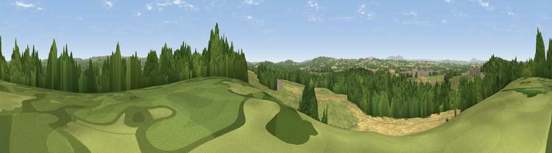

Viewpoint near Smestow
#17399 in England · top 27% of its area beats it · near SmestowWhere it is
The exact computed spot (SO 84575 90875). Click the marker for map links.
The view, rendered

A 360° render of this exact spot computed from the terrain model, tree cover and land cover — summer colours, afternoon light, calibrated against photographs of famous viewpoints. Real trees, hedges and buildings will differ in detail.
The panorama
Grey silhouette: terrain skyline in each direction (720 bearings, Earth curvature and refraction included). Dashed green: skyline with trees (+15 m) and buildings (+8 m) as obstacles. Blue strip: how far the ground is visible on each bearing.
Where the view opens
Wedge length = distance to the farthest visible ground on that bearing (vegetation-aware). Rings at 10, 25 and 50 km.
What fills the view
42% grassland · 31% woodland · 20% cropland · 7% built-up
Angular shares of the visible panorama (visual magnitude), not map area. Landscape diversity 0.54 (0–1 Shannon).
Key numbers
More beautiful places nearby
The staircase of upgrades: each row has a higher view potential than everything closer. Driving times are estimates from straight-line distance, calibrated against real road routing — check an actual route before setting out.
| Place | Direction | Drive | Score |
|---|---|---|---|
| Viewpoint near Wombourne | NE · 4 km | ~10 min | 56.0 |
| Viewpoint near Lower Penn | NE · 5 km | ~11 min | 58.8 |
| Viewpoint near Enville | SSW · 6 km | ~14 min | 68.7 |
| Viewpoint near Enville | SSW · 7 km | ~14 min | 73.1 |
| Viewpoint near Clent | SE · 14 km | ~25 min | 74.3 |
| Knowle Hill | WSW · 18 km | ~31 min | 75.5 |
| Viewpoint near Abberley | SSW · 25 km | ~41 min | 77.5 |
| Abberley Hill | SSW · 25 km | ~41 min | 80.4 |
52.51554, -2.22873 · source: screening · position refined by local search. Computed location — check access rights before visiting.